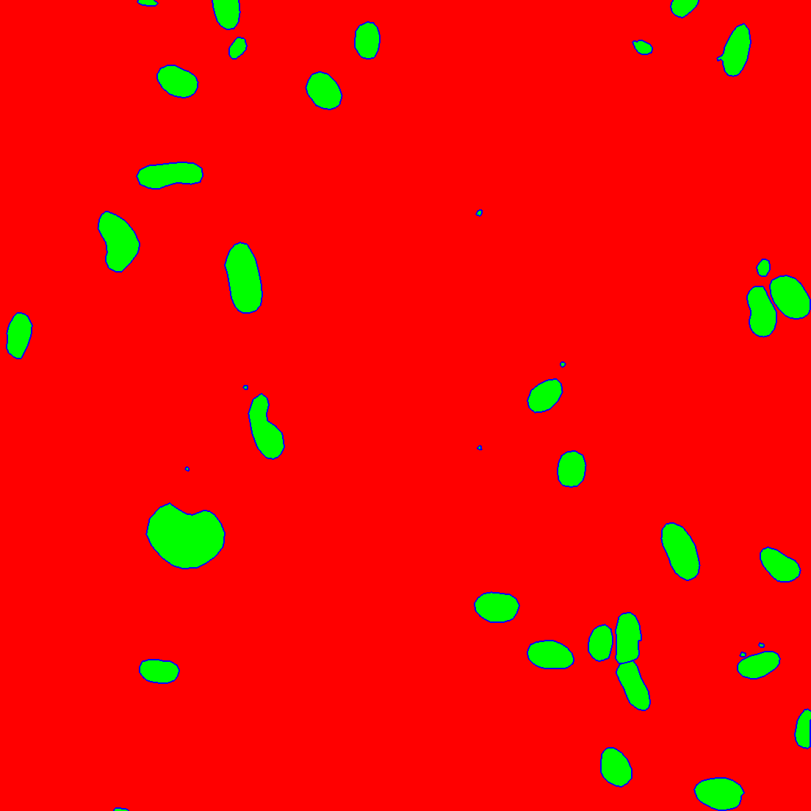

U-Net training
For training U-Net models, the code is taken and modified from carpenterLab.
Annotation
For training UNet models, some images are taken from Broadinstitute as well as annotated masks for similarity of these images to Our own images. However, we had to annotate more of our own images and combine them with online available images. For this purpose, we have used cvat tool.
cvat
How we used:
git clone https://github.com/opencv/cvat
cd cvat
Run docker containers. It will take some time to download the latest CVAT release and other required images like postgres, redis, etc. from DockerHub and create containers.
docker compose up -d
(Optional) Use CVAT_VERSION environment variable to specify the version of CVAT you want to install specific version (e.g v2.1.0, dev). Default behavior: dev images will be pulled for develop branch, and corresponding release images for release versions.
CVAT_VERSION=dev docker compose up -d
Alternative: if you want to build the images locally with unreleased changes see How to pull/build/update CVAT images section You can register a user but by default, it will not have rights even to view the list of tasks. Thus you should create a superuser. A superuser can use an admin panel to assign correct groups to other users. Please use the command below:
sudo docker exec -it cvat_server bash -ic 'python3 ~/manage.py createsuperuser'
If you don’t have winpty installed or the above command does not work, you may also try the following:
# enter docker image first
docker exec -it cvat_server /bin/bash
# then run
python3 ~/manage.py createsuperuser
Choose a username and a password for your admin account. Open the installed Google Chrome browser and go to localhost:8080. Type your login/password for the superuser on the login page and press the Login button. Now you should be able to create a new annotation task.
I also had to download docker desktop. Now I only open that and run cvat container on that. Then open localhost:8080 on my browser. In cvat also I can define projects and labels. Then add a job and start to annotate. Annotations are polygons and not polyline.
Published Datasets
The annotated datasets are published.
Preprcoessing
After exporting annotation masks from cvat, train/UNet/preprocessing.py script will run over masks to create boundary images.
python3 preprocessing.py
example of raw annotated image
Three class (background, inside and boundary pcs) images are as follows:

Training
After having directories in the following order:
UNet/
├── data
│ ├── 0_raw_images
│ ├── 1_raw_annotations
│ ├── 2_norm_images
│ ├── 2_norm_images_merged
│ ├── 3_boundary_labels
│ └── 4_filelists
│ ├── TEST.txt
│ ├── training.txt
│ └── VALIDATION
├── src
│ ├── utils
│ ├── preprocessing.py
│ ├── training.py
│ ├── prediction.py
│ ├── evaluation.ipynb
│ ├──experiments
│ ├── experiment_name
│ │ ├── models
│ │ │ ├── model_xxx.hdf5
│ │ ├── log.csv
│ │ ├── model.hdf5
│ └── experiment_name
│ ├── out
│ │ │ ├── prob
│ │ │ └── segm
we trained models with:
python3 training.py
Prediction
we predicted the segmentation masks of validation and test images with the best model:
python3 prediction.py